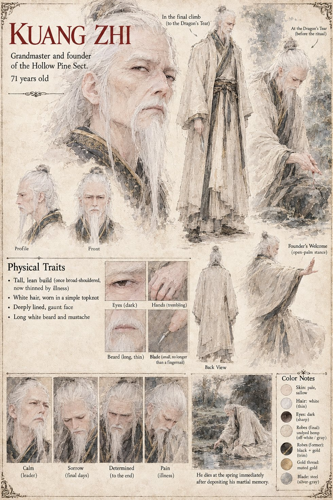

Kuang Zhi
Grandmaster and founder of the Hollow Pine Sect · 71 years old by his sheet
The builder of the Hollow Pine Sect, which he raised from a single borrowed courtyard into the most quietly respected martial school in three counties: no standing army, no official patronage, and in forty years not one duel it had not first tried three separate ways to avoid. He had come to believe that a lifetime of technique does not survive being written down. Words thin it, demonstration thins it faster, and his own body had been in decline for the better part of a decade. The spring, if the hermit's stories were even a tenth true, was the one method of transmission that copied and did not translate.
He chose Shen Lie because the boy asked questions no one else thought to ask and forgot afterward that he had asked them, and ranked him above two more talented seniors without telling either of them why. He sent him two days south on an errand any junior could have run, and told no one where he himself was going. He climbs Mount Qingxuan alone, on legs that had not carried him unassisted in three years, opens his smallest left finger with a blade no longer than a fingernail, lets seven drops fall and holds his whole face under the water, and dies before dawn with the Hollow Hermit three feet away. His wish, that his gift wait for exactly one throat, is undone by thirst, a wandering ewe and three days' difference between one man's errand and another man's walk. His tea was a bitter northern leaf no one else in the sect could stomach. The chroniclers will call the war that follows the War of the Stolen Style and give him no part in it beyond, in some tellings, a sword. His sheet gives his age as 71, a tall lean frame once broad-shouldered and thinned by illness, and a white topknot and long white beard.
Appears In

Related Subjects


Related Records

Kuang Zhi at the water before dawn, his whole face beneath the surface and his blood on the stone beside the blade, as the Hollow Hermit sits three feet away and does nothing whatsoever to prevent it.

Bai Rong lowers his face beneath the water where Kuang Zhi died, and Shen Lie counts eleven held breaths while the Hollow Hermit watches from the rock, saying nothing.